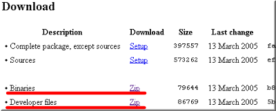
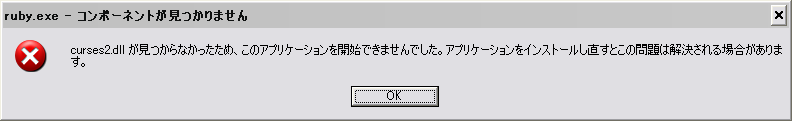
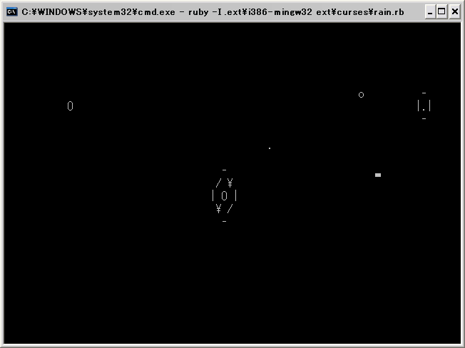

build Ruby on Windows 【第 2 回】
書いた人：たむらけんいち
前口上
前回 から早や半年が過ぎてしまった。月日は移り、私の長男は小学生となり、Rubyは 1.8.3 preview1がアナウンスされた。当記事ではRubyのソースコードは、1.8.3 preview1 を扱うこととする。
また前回インストールした MinGW であるが、こちらも月日が流れ MinGW-4.1がリリースされたのでこれを使って検証を行なった。バージョンが違っても基本的な部分は同等と思われるが、お約束としてここに記しておく。
ちなみに MinGW-4.1.0ではインストーラが Cygwinの様にネットワークインストールするようになった。Sourceforgeのサイトを選択して、g++やbinutilsのインストールする/しないやCurrent/Candidate/Previousを指定する。インストールに関しても前回同様詳しい説明は省くが基本的には Nextボタンを押すだけだ。

Rubyの拡張ライブラリとは
宿題って何だったっけ？
拡張ライブラリについての課題が課題その１だったわけだが、少し振り返ってみよう。
実際に ruby-1.8.2 preview3を MinGW環境をセットアップしてコンパイルしてみたわけだが、拡張ライブラリが作られたものと作られなかったものとがあった。この違いを考えて欲しかった訳だ。ちなみに課題その２のエディタについては適当なものが手元にあるという前提で進めさせてもらう。
では、環境が変っているが、前回同様ソースファイルを取得して解凍後に
$ ./configure && makeするだけでビルドには成功する。
$ ruby -v
ruby 1.8.3 (2005-05-12) [i386-mingw32]それでは、拡張ライブラリを確認してみよう。
$ find . -name *.so
./.ext/i386-mingw32/bigdecimal.so
./.ext/i386-mingw32/digest/md5.so
./.ext/i386-mingw32/digest/rmd160.so
./.ext/i386-mingw32/digest/sha1.so
./.ext/i386-mingw32/digest/sha2.so
./.ext/i386-mingw32/digest.so
./.ext/i386-mingw32/dl.so
./.ext/i386-mingw32/enumerator.so
./.ext/i386-mingw32/etc.so
./.ext/i386-mingw32/fcntl.so
./.ext/i386-mingw32/iconv.so
./.ext/i386-mingw32/nkf.so
./.ext/i386-mingw32/racc/cparse.so
./.ext/i386-mingw32/sdbm.so
./.ext/i386-mingw32/socket.so
./.ext/i386-mingw32/stringio.so
./.ext/i386-mingw32/strscan.so
./.ext/i386-mingw32/syck.so
./.ext/i386-mingw32/tkutil.so
./.ext/i386-mingw32/Win32API.so
./.ext/i386-mingw32/win32ole.so.soなファイルが生成される場所が変更されていることに気付いただろうか。
拡張ライブラリの有無の確認のために、ext/以下のディレクトリを羅列する。1
$ find ext/ -type d -maxdepth 1 -mindepth 1
ext/bigdecimal
ext/curses +
ext/dbm +
ext/digest
ext/dl
ext/enumerator
ext/etc
ext/fcntl
ext/gdbm +
ext/iconv
ext/io +
ext/nkf
ext/openssl +
ext/pty +
ext/racc
ext/readline +
ext/sdbm
ext/socket
ext/stringio
ext/strscan
ext/syck
ext/syslog +
ext/tcltklib +
ext/tk
ext/Win32API
ext/win32ole
ext/zlib +拡張ライブラリが作られていないディレクトリには『+』で印を付けてみた。2
そもそも拡張ライブラリとはどんなものだったろうか?
RubyインタプリタはC言語で書かれているのだが、Ruby自体を拡張するためのAPIを用いてRubyに機能追加するための仕組みが拡張ライブラリである。
ほとんどのライブラリは OSの仕組みを利用して、Rubyインタプリタのコンパイル時以降に作成された拡張ライブラリを動的に組込むことが可能だ。Windows OS の場合、DLL3 なので作法に従って作成する必要があるが、Rubyの場合、特にこの辺を意識する必要はない。
README.EXT.jaは、OS毎の解説が無いが、これはRubyが吸収しているからだ。LinuxなどのUNIX系OSでも、MinGW/MSYSでも基本的にこの辺は問題なく動く。
拡張ライブラリの作り方に関しては前田修吾氏 4の「第1回 拡張ライブラリの作成(1), (2)」が詳しい。
キモは extconf.rb
上の前田氏の文章でも触れられている extconf.rb だが、ここで各ディレクトリのものを比較してみる。
$ ls -F ext/bigdecimal/
Makefile bigdecimal.c bigdecimal.h bigdecimal_en.html depend lib/
README bigdecimal.def bigdecimal.o bigdecimal_ja.html extconf.rb sample/
$ cat ext/bigdecimal/extconf.rb
require 'mkmf'
create_makefile('bigdecimal')ext/bigdecimal ディレクトリの bigdecimal.o は bigdecimal.cがコンパイルされた証拠である。extconf.rbはたったの2行のシンプルなものだ。
$ ls -F ext/curses/
Makefile depend hello.rb* mouse.rb* view.rb*
curses.c extconf.rb mkmf.log rain.rb* view2.rb*
$ cat ext/curses/extconf.rb
require 'mkmf'
dir_config('curses')
dir_config('ncurses')
dir_config('termcap')
make=false
have_library("mytinfo", "tgetent") if /bow/ =~ RUBY_PLATFORM
have_library("tinfo", "tgetent") or have_library("termcap", "tgetent")
if have_header(*curses=%w"ncurses.h") and have_library("ncurses", "initscr")
make=true
:
:対して、ext/curses ディレクトリでは curses.o が出来ていないため curses.cはコンパイルされていない。extconf.rbも31行もある。ここでポイントとなるのは、have_header()とhave_library()だ。リファレンスマニュアルのmkmf.rbに解説がある。
- have_header(header)
- ヘッダファイル header が存在するかどうかを検査します。
- have_library(lib[, func])
- ライブラリ lib がシステムに存在し、関数 func が定義されているかどうかを検査します。
つまり、ライブラリの機能を Ruby から拡張ライブラリとして使うケースに必要な情報を取得するための関数だ。 curses拡張ライブラリの場合、プラットフォームで条件分けしつつ必要なライブラリの関数とヘッダファイルの存在のペアを確認していく。OKならば make変数が trueになり再度必要な関数の存在を確認してから、Makefileを出力する。ここまででcurses拡張ライブラリを作るのに必要なライブラリなどが足りなかった場合は拡張ライブラリも作られないのだ。
extconf.rbで確認されるライブラリである libtinfoやlibtermcapが初期状態の MinGW/MSYSには存在しないため、これらの拡張ライブラリは作られないというのが解答だ。 逆に最近は iconvライブラリが含まれるため iconv拡張ライブラリは生成されている。それから特にライブラリを必要としない bigdecimalや nkfも拡張ライブラリ作成は問題ない。この辺をふまえて、もう一度先程のリストを眺めてみると良いだろう。
じゃ、どうすりゃいいの？
選択肢としては、以下のどちらかになる。
- 必要なライブラリをソースから用意する。
- ライブラリのバイナリを探してインストールして利用する。
自前でコンパイルするのは手間がかかるものもあったりするが、最新版を自分の好きなように用意できるのは魅力だ。ただMinGW/MSYSではまだまだ UNIXなソースのコンパイルは通らないものも多い。バイナリは見つけられるかどうかが問題だ。ただし今回に限れば標準添付な拡張ライブラリに必要なものは、ほぼ揃っている。
jarp Porting Libraries to Win32( http://jarp.does.notwork.org/win32/ ) 5
gdbm, openssl, pdcurses(curses), readline, zlib
GnuWin32 ( http://gnuwin32.sourceforge.net/ )
上記 + GNUを中心としたツールライブラリ。結構新しめ。
GnuWin32 provides Win32 (MS Windows 95 / 98 / ME / NT / 2000 / XP) ports of tools with a GNU or similar open source license.
実践すべし
では、具体的に curses拡張ライブラリの対応をしてみる。今回は GnuWin32のライブラリを利用してみよう。
まずはサイト に飛ぶ。News / Annoucementsを見ると沢山のライブラリが releaseされていることが判る。ページ左にサイドメニューがあるので、見てみると Download - Packagesがリソースの一覧なので、ページ検索で PdCurses 2.6 terminal library を探して欲しい。
PDCurses for Windows のページでは Description とか Installation and Usage には目を通しておくこと。今回は、Binaries と Developer files(Libraries) を Downloadする。 
早速中身を確認してみよう。unzip -l だ。
$ unzip -ql pdcurses-2.6-lib.zip
Length Date Time Name
------ ---- ---- ----
22 03-12-05 21:05 include/curses.h
22 03-12-05 21:05 include/ncurses/curses.h
22 03-12-05 21:05 include/ncurses/ncurses.h
22 03-12-05 21:05 include/ncurses.h
21 03-13-05 02:04 include/panel.h
85633 03-13-05 02:27 include/xcurses.h
2641 03-07-05 04:51 include/xpanel.h
30720 03-13-05 02:20 lib/curses-bcc.lib
88 03-07-05 04:36 lib/curses.def
206630 03-13-05 02:20 lib/curses.dll.a
1756 03-13-05 02:20 lib/curses.lib
112736 03-13-05 02:20 lib/libcurses.a
4570 03-07-05 04:36 lib/libpanel.a
0 03-13-05 23:51 manifest/pdcurses-2.6-lib.mft
61 03-12-05 06:06 manifest/pdcurses-2.6-lib.ver
------ -------
444944 15 files
$ unzip -ql pdcurses-2.6-bin.zip
Length Date Time Name
------ ---- ---- ----
60 03-13-05 02:03 bin/contrib/pdcurses/2.6/depends-GnuWin32.lst
1788 03-13-05 22:02 bin/contrib/pdcurses/2.6/pdcurses-2.6-GnuWin32.README
:
:今回必要となるのは、PdCurses-2.6-lib.zip の include,lib 以下と PdCurses-2.6-bin.zip の curses2.dll だけだ。よって
$ unzip -q pdcurses-2.6-lib.zip {include,lib}/*
$ unzip -q pdcurses-2.6-bin.zip bin/*.dllこれで bin,lib,includeに必要なファイルが揃ったので /mingw 以下にコピーをする。
$ cp -a bin lib include /mingw/ruby-1.8.3のソースディレクトリに戻ってから、ext/curses/Makefileを削除して、makeする。
$ rm ext/curses/Makefile
$ makeext/cursesのみ再ビルドされて curses.so が作られる。
$ ls ext/curses/
Makefile curses.o extconf.rb mkmf.log rain.rb view2.rb
curses.c depend hello.rb mouse.rb view.rbでは動作確認だ。MSYSの rxvtではなく cmd.exeを起動してからruby-1.8.3のソースディレクトリに移動して欲しい。まずは、curses2.dll の存在するディレクトリが PATHに登録されている必要がある。
> set PATH=d:\MinGW\bin;%PATH%これを忘れて curses.so を使おうとすると 
というエラーダイアログが表示されて、
.ext\i386-mingw32/curses.so: 126: 指定されたモジュールが見つかりません。 -
.ext\i386-mingw32/curses.so (LoadError)というメッセージがコンソールに出力されるので注意されたし。
>ruby -I .ext\i386-mingw32 ext\curses\rain.rb
前回のまちがいについて
第 1 回において WindowsOS付属のメモ帳を
容量が 64Kまでだったり、文字コードがShiftJISしか対応してなかったりとけなしたが、
この連載は
Windows OS (具体的には、Windows 2000 以降の Microsoft 製の OS たち)
上で *3、ruby.exe をビルドする方法について説明していく。とあるため正しくないのではと、すぎむし氏に指摘を受けた。もっともである。 上記制限は、Win95,98付属のメモ帳である。訂正させていただく。
__ 容量制限はなくなったし、UNICODEなどにも対応してます。__
すぎむし氏からの内容をそのままコピペしておく。
Microsoft(R) メモ帳
Version 5.0 (Build 2195; Service Pack 2)
では
ANSI (Shift-JIS)
Unicode (little endian) たぶんUTF-16とほぼ同義
Unicode big endian
UTF-8
が、いずれも(ここでの使用法なら)ほぼ容量制限なしに編集可能ですし、
日本語(JIS 1 バイト カタカナ可)・日本語(EUC)にも
(1) IEにドラッグ&ドロップ
(2) 表示内容を「すべて選択」、「コピー」
(3) メモ帳に「貼り付け」
で対応可能。{{fn('この手法は改行コードの問題にも対応できる。')}}
欠点を挙げるなら
# 同名ファイルへの上書き保存時バックアップ機能一切なし
# アンドゥ回数の制約; 1回こっきり
# 中国語・韓国語の入力で文字化け?
# 文字列の検索・置換で正規表現に未対応
などかと。あとがき
さて今回は前回と文体を合せることが出来ないくらいバタバタしてしまって、るびま編集部員のみなさんに大変迷惑をかけてしまった。ただ、せっかく第一回を書いたのだし、この辺の事情はあまり表に出ないということもあり、何とか完成させたかったことと、影の編集長こと、すぎむし氏のフォローがあって形になったことを記しておきたい。
1.8.3の正式リリースはまだ、まつもとさんからは無いようである。前回同様締めの言葉はこうさせて頂く。
願わくば、未来のコミッターとなる人が、この記事を読んだ方の中から出てきてくれればと思う。
著者について
たむら (tamura at ruby-lang dot org)
退役エンジニア。日記が書けないほど仕事が忙しいなんて普通じゃないと思う今日この頃。締切り間際に病気になるのは止めて欲しいぞ>我が子たちよ。
build Ruby on Windows バックナンバー
- build Ruby on Windows 第 1 回
- build Ruby on Windows 第 2 回